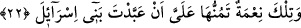

atan ve insanı vuran kimse gibi. Çünkü, Mûsâ (a.s.)’ın murâdı kıbtîyi öldürmek değil
te’dib etmekti. Benim yumruğumla onun öleceğini bilemedim.
21. Sizden korkunca da hemen aranızdan kaçtım. Sonra Rabbim bana hikmet
bahşetti ve beni peygamberlerden kıldı.
“Sizden” bana bir zarar vereceğinizden ve cinâyetimden dolayı hak etmediğim bir
ceza ile sorumlu tutacağınızdan “korkunca da hemen aranızdan kaçtım.” Kendimi
sakınmak için aranızdan çıkıp Medyen tarafına gittim. “Sonra” Medyen’den
döndüğümde “Rabbim bana” ilim ve “hikmet bahşetti ve beni” size gönderilen
“peygamberlerden kıldı.”
Fethu’r-Rahmân’da der ki: “
” nübüvvet/nebîlik demektir. “
”
nübüvvetin ikinci derecesidir (rasûllük). Çünkü nice nebî vardır ki rasûl değildir.”
Büyüklerden birisi der ki: “Allah Teâlâ Mûsâ (a.s.)’a yaptığı gibi kullarından birini
yüksek makamlardan bir makama ulaştırmak istediğinde içine bir korku verir ki halktan
kendisine kaçsın ve böylece ona özel sırları keşfolunsun. Havâssın günahları
başkalarının günahları gibi değildir. Çünkü onlar tabîata âit şehvetin hükmü ile bu
günahlara düşmezler. Bilakis hatâ ile düşerler. Hatâ ile işlenenden ise sorumluluk
kaldırılmıştır.
22. O nimet diye başıma kaktığın ise İsrailoğulları’nı kendine kul köle etmendir.
“O nimet diye” zâhiren “başıma kaktığın ise” hakîkatte “Seni yetişitirmedik mi?”
sözüyle işâret edilen Fir’avn’un Mûsâ (a.s.)’ı yetiştirip büyütmesi, “İsrailoğulları’nı
kendine kul köle etmendir.” Yâni İsrâiloğulları’nı köle yapman, onların doğan erkek
çocuklarını boğazlayıp öldürerek onlara kasdetmendendir. Çünkü benim senin yanına
düşmemin ve yanında büyümemin sebebi budur. Bu aslında kavmimi kendine köle
edinmenden kaynaklanır. Yâni Fir’avn İsrâiloğulları’na baskı yapmasa ve doğan erkek
çocuklarını boğazlamasaydı, Mûsâ (a.s.)’ın annesi onu büyütecek ve denize
atmayacaktı. Böylece o Fir’avn’a ulaşmayacak ve onun yanında büyütülmüş
olmayacaktı. Dolayısıyla Fir’avn kendi verdiği sıkıntının sebep olduğu bir şeyi nasıl
onun başına kakabilir?
Mûsâ (a.s.) önce peygamberliğini lekelemek üzere Fir’avn’un kendisini kınadığı